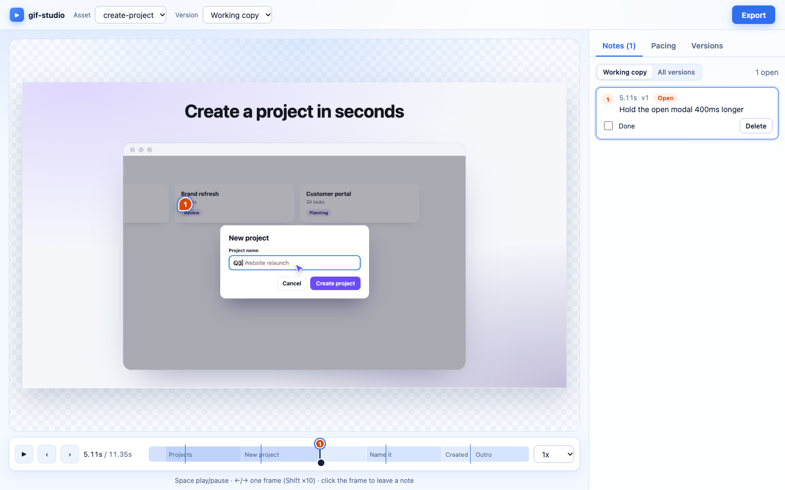

Open source · MIT · runs on your machine
Marketing GIFs your agent makes from your repo
Point your AI agent at an app, a folder of screenshots or a brief. It runs the app, finds the core journeys, records them and exports looping GIFs, crisp MP4s and stills. You scrub, leave notes, and say “apply notes from v2”.
npx gif-studio init
Then ask your agent: “Make a marketing GIF of the core flow of this app.”
From repo to final/ in one loop
-
1
Scan
Works out what's here: app, static site, images or docs. Framework, dev command, routes, brand colors, fonts, logos, README pitch, demo accounts.
-
2
Explore
Starts the app, crawls it in a real browser and screenshots every page. Your agent looks and picks the journeys worth showing.
-
3
Record
Replays each journey and saves hi-res plates: every state, plus the box of the element that was clicked. Records real footage too, for motion.
-
4
Compose
Builds a seekable
scene.htmlfrom a template, with a camera that follows the action, a human cursor, typing and captions. -
5
Render
Captures frame by frame in headless Chrome. Exports a palette-optimized GIF, an H.264 MP4 at 2x, and a still for every beat.
-
6
Review & ship
You leave notes in the studio. Your agent applies them as v2, v3… Then
promotecopies the version you pick intofinal/.
Built for agents first
Install it once and your agent knows what to do. No prompt engineering.
- A playbook.
gif-studio guidecovers the whole workflow, the decision tree, the scene API and the quality bar. - A local MCP server. 30 tools, registered by
initfor Cursor and Claude Code. Screenshots and contact sheets come back as images the agent can see. - A CLI that talks JSON. Every command returns
{ok, data, summary, next}, with the next step spelled out. - A skill. Triggers on “make a marketing GIF”, “animate this flow” or “apply notes from v3”.
- Logins handled. Seed accounts from your repo, or a one-time sign-in that's saved and reused.
# the agent's first moves $ gif-studio status --json {"ok": true, "next": ["gif-studio scan"]} $ gif-studio scan Kind: app (Plannr) · dev "npm run dev", port 4610 Brand: #6c4cf5 #2a1a7a; fonts Inter Seed accounts: demo@plannr.test $ gif-studio app start && gif-studio explore 2 pages · suggested: create-project $ gif-studio record create-project 4 plates (2x) $ gif-studio new hero --journey create-project $ gif-studio render hero hero-v1-10.9s.mp4 (0.8 MB) hero-v1-10.9s.gif (1.7 MB) · 4 stills $ gif-studio studio --background Studio running at http://localhost:4455
A studio for the human in the loop
Scrub, step frame by frame, click anywhere on the frame to pin a note to that moment, paste in a reference image, tune the pacing of each section. Notes you left on v1 show as “Covered in v2” when the next version lands.

Pinned notes
Every note has a time and a position, and can carry images. Your agent gets them as a markdown checklist.
Pacing
One slider per section. Faster intro, longer hold on the result. The next export picks it up.
Versions
Every render is a frozen vN with its own scene snapshot, GIF, MP4 and stills. Compare, download, promote.
Formats for everywhere it ships
- 16:9 product pages, docs, slides
- 1:1 social feeds
- 4:5 LinkedIn, Instagram
- 9:16 stories and shorts; the camera crops and pans to each action
- modal and card in-product announcements
Templates: product walkthrough, feature highlight, step-card loop, before/after, and synthetic UI for features that aren't built yet.
Scenes are just HTML
A scene is a page that can draw any moment on request. That keeps renders frame-exact and diffs readable, and an agent can edit one like any other file.
import {createScene} from '/__studio/runtime.js'; const scene = createScene({width: 960, height: 540}); const cursor = scene.cursor({name: 'Alex'}); let t = cursor.moveTo(400, 800, {x: 420, y: 300}); t = cursor.click(t); t = scene.type(field, {at: t, text: 'Q3 launch plan'}); scene.beat(t, 'Typed'); scene.done({duration: t + 1500});
Make your first GIF in five minutes
npx gif-studio init
Node 20+ and Chrome or Edge. ffmpeg is bundled. Everything runs locally.